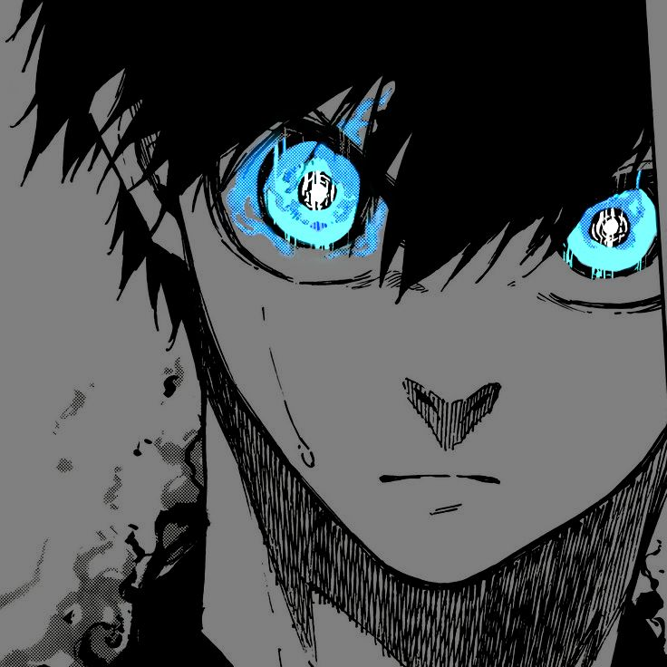
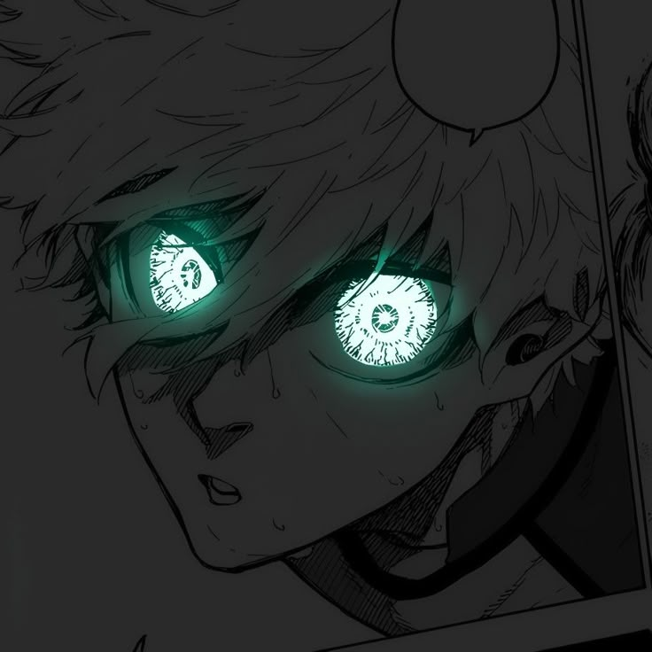
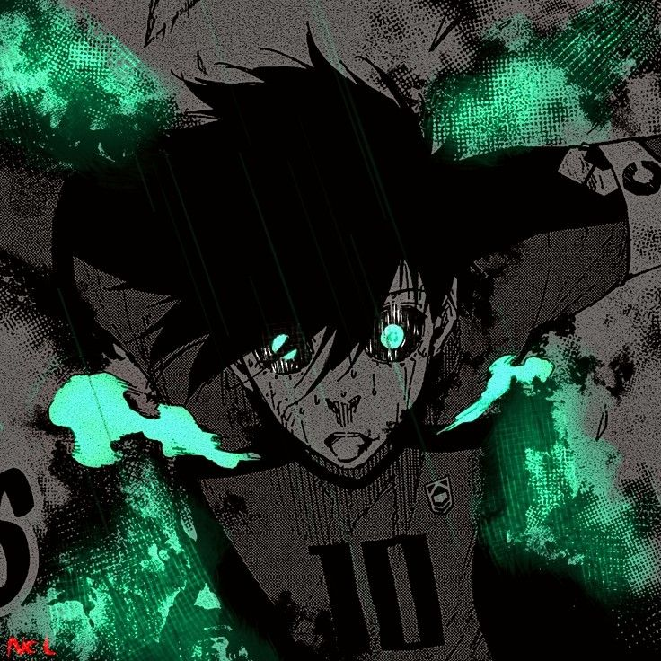
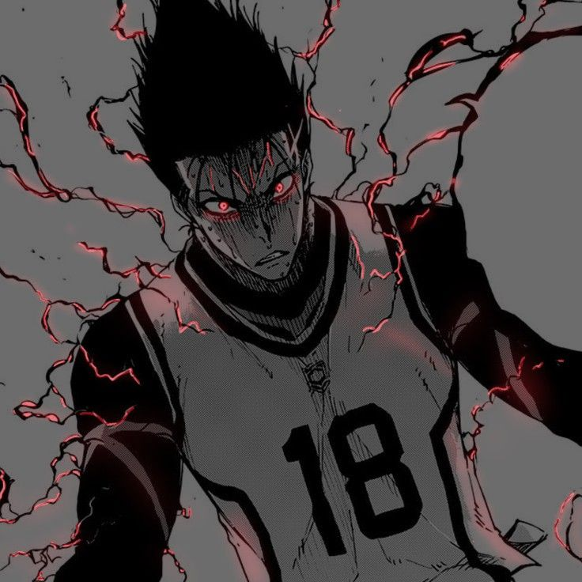

Subcapítulo 1: Isagi Yoichi – O Coração Metavizual
Isagi Yoichi começou o projeto como um jogador comum, mas sua evolução o transformou no coração pensante do Blue Lock. Sua arma principal é a Metavisão, uma percepção espacial absoluta que permite ler o campo inteiramente em três dimensões. Ele não apenas prevê o futuro das jogadas, mas manipula o espaço e o tempo ao redor dos adversários. Isagi evoluiu ao aprender a "devorar" o talento de seus rivais, adaptando-se a qualquer cenário de crise para se consolidar como o verdadeiro "cérebro" e o candidato mais perigoso a se tornar o atacante definitivo.

Subcapítulo 2: Nagi Seishiro – O Gênio da Armadilha
Seishiro é o prodígio preguiçoso cuja genialidade desafia as leis da física. Seu controle de bola e capacidade de primeiro toque (trapping) são incomparáveis, permitindo-lhe dominar lançamentos impossíveis e convertê-los em gols acrobáticos instantâneos. Inicialmente desmotivado, Nagi descobriu o prazer do egoísmo e da frustração dentro do Blue Lock. Embora enfrente oscilações por depender muito de sua criatividade momentânea, seu teto de habilidade bruta continua sendo um dos mais assustadores de todo o projeto.>

Subcapítulo 3: Rin Itoshi – O Regente Destrutivo
Itoshi entrou no projeto como o jogador perfeito e o número um indiscutível. Seu estilo de jogo original baseava-se em uma marionete tática, onde ele controlava as ações de aliados e inimigos para criar o cenário ideal para o gol. No entanto, seu verdadeiro ego é muito mais sombrio: o futebol de "impulso destrutivo". Quando entra nesse estado de transe violento, Rin busca destruir as melhores armas dos oponentes em confrontos diretos, usando uma precisão cirúrgica de chute combinada com uma agressividade implacável.

Subcapítulo 4: Shoei Barou – O Rei da Anarquia
Shoei Barou auto-intitula-se o "Rei" do campo e recusa-se terminantemente a servir a qualquer outra pessoa. Suas capacidades físicas são impecáveis, destacando-se pela força física esmagadora e por um chute de média distância milimétrico. Quando o Blue Lock tentou forçá-lo a cooperar, Barou evoluiu criando o "Futebol de Anarquia". Ele brilha na escuridão do campo, roubando a bola de seus próprios companheiros e usando o caos gerado pelas táticas alheias para cravar sua soberania absoluta através do gol.

Subcapítulo 5: Ryusei Shidou – O Demônio da Grande Área
Ryusei Shidou é a personificação da violência e do instinto animal no futebol. Ele não precisa de táticas, lógica ou metavisão; Shidou joga puramente por sensação espacial na grande área. Sua capacidade de finalização é absurda, sendo capaz de chutar de qualquer ângulo, de bicicleta, de voleio ou de costas, desde que esteja perto do gol. Considerado um elemento altamente instável e impossível de coexistir com o sistema padrão, ele encontra sua química perfeita apenas quando o caos do jogo atinge o nível máximo.